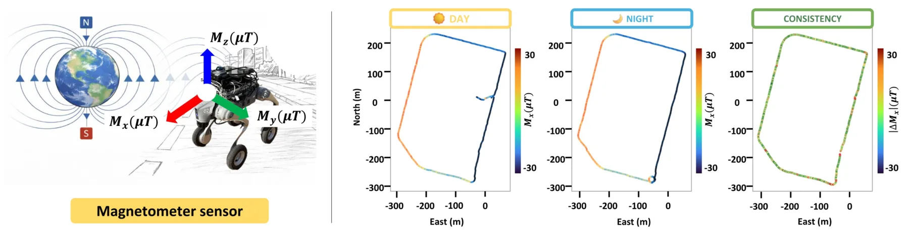
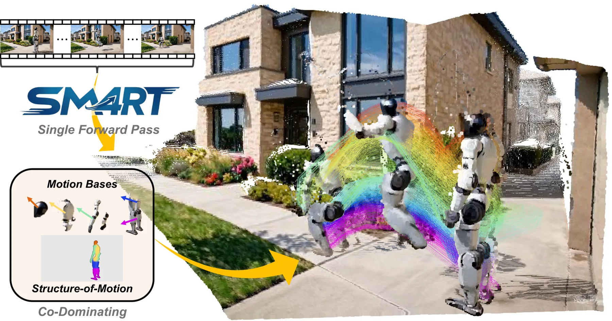
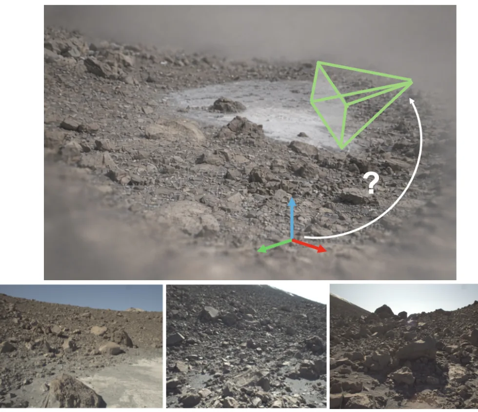

静态网页 · 2026-07-28
SLAM/GNSS/三维重建每日论文阅读
按评分、截图和中文摘要快速筛选当天候选；需要原文时可切换 English。
候选论文：3 推荐论文：3 新论文：3 仓库：34 新仓库：17
今日概览 今天的核心信号集中在三条互补路线：Mag4D-SLAM 首次提供大规模室外、多模态、重复遍历地磁 SLAM 数据，直接面向 GNSS 拒止、航向漂移与跨时段定位；SM4RT 用少量 SE(3) motion bases 和逐像素分配表达结构化动态，从单目视频联合恢复三维几何与 4D 运动；第三项工作把 MVS/LiDAR 几何监督引入 3DGS 地图训练，在低纹理、感知混淆和稀疏视角的类行星环境中做单图 6-DoF 重定位。
新增论文 ：3 篇，均为 is_new=true；推荐 3 篇。重复过滤 ：5 篇；没有把历史论文作为“跟踪/更新”补入推荐。医疗过滤 ：0 篇；本批候选均不属于医疗/生物医学/临床方向。首选阅读 ：Mag4D-SLAM、稀疏视角 3DGS 重定位、SM4RT。GNSS 专项 ：没有新增 RTK/PPP/PPP-RTK、整数模糊度、NLOS/多路径或 GNSS/INS/视觉/激光紧耦合解算论文；Mag4D-SLAM 的价值在于地磁作为 GNSS-denied 绝对航向与位置线索的数据基础。

新论文 · 日期 2026-07-24 · score 19 · cs.RO
作者：Bibhutibhusan Nayak, Hyoseok Ju, Giseop Kim
评分 9.4/10
地磁 SLAM GNSS 拒止 多模态数据集 长期定位 地点识别
一句话工作总结： 以 18 km 多模态重复遍历数据系统研究地磁航向、磁场闭环与跨时段定位，为 GNSS 拒止 SLAM 提供数据基础。
地磁感知能够在无基础设施条件下提供绝对航向参考，并可在 GNSS 拒止或视觉退化时保持可用，但此前缺少支持系统研究的大规模室外机器人数据。Mag4D-SLAM 是首个大规模室外地磁 SLAM 数据集，包含 14 条、总计超过 18 km 的序列，同步采集 LiDAR、camera、IMU、tri-axis magnetometer 和 GNSS，并提供 SE(3) ground-truth poses。数据沿结构化…
Geomagnetic sensing offers an infrastructure-free, absolute orientation reference that is robust to GNSS denial and visual degradation, yet no large-scale outdoor robotics dataset supports its systematic study…

新论文 · 日期 2026-07-25 · score 11 · cs.CV, cs.AI, cs.RO
作者：Shing Ho J. Lin, Wenzhao Zheng, Dong Zhuo, Yuqi Wu
评分 8.7/10
四维重建 结构化运动 SE(3) 单目视频 动态场景
一句话工作总结： 用少量 SE(3) 运动基及时间共享的像素分配联合恢复三维几何、世界运动与对象级运动结构。
现有稀疏 tracking 或稠密 point-wise flow 往往把运动视为相互独立的点位移，忽略真实物体通常遵循共享的刚体运动。SM4RT 是用于端到端三维重建和结构化运动感知的 Structured Motion 4D Reconstruction Transformer。其 Structure-of-Motion 表示把场景运动分解为少量 motion bases，每个 basis 由一段以 6D tw…
Geometry Foundation Models (GFMs) have substantially advanced monocular 3D reconstruction, yet extending this capability to 4D dynamic understanding remains a fundamental challenge. Most existing motion percep…

新论文 · 日期 2026-07-24 · score 11 · cs.CV
作者：Maria Peribañez, Javier Civera, Rudolph Triebel, Riccardo Giubilato
评分 9/10
视觉重定位 3DGS LiDAR 深度 多视图立体 低纹理环境
一句话工作总结： 以 MVS 与 LiDAR 深度共同监督 3DGS 地图，再对地图直接优化单图 6-DoF 位姿，面向低纹理和稀疏弱重叠视角重定位。
在类行星地形中，低纹理、感知混淆、强照明变化，以及前向 rover 运动和自由行驶方向造成的稀疏弱重叠视角，会使 image-to-image 和 image-to-map matching 明显退化。该方法不再依赖经典 correspondence pipeline，而是针对由 3D Gaussian Splatting 构建的 differentiable map 直接估计 camera pose。核心是 ge…
Visual localization becomes extremely challenging in planetary-like terrains characterized by low texture, perceptual aliasing, harsh illumination, and sparse, weakly overlapping viewpoints induced by forward…
精选仓库/项目
默认显示 8 个精选；新仓库、高分仓库和 GNSS/GPS/RTK 相关仓库优先，可展开查看完整候选。
新项目 · JavaScript · ★ 1 · 更新 2026-07-27 · score 5
新项目 · Python · ★ 4 · 更新 2026-07-27 · score 4
新项目 · HTML · ★ 0 · 更新 2026-07-27 · score 4
新项目 · Python · ★ 0 · 更新 2026-07-27 · score 4
ehstevo/foot-mounted-ins Foot-mounted pedestrian inertial navigation: a ZUPT-aided strapdown INS fused with GNSS via an error-state EKF.
新项目 · Python · ★ 0 · 更新 2026-07-27 · score 2
新项目 · Python · ★ 0 · 更新 2026-07-27 · score 7
新项目 · Python · ★ 0 · 更新 2026-07-27 · score 7
新项目 · Python · ★ 0 · 更新 2026-07-27 · score 7
还有 26 个候选仓库
EZHIL-11/slam_robot Autonomous SLAM mobile robot built with ROS 2 and Gazebo. Uses simulated LiDAR (/scan) and wheel odometry (/odom) to map unknown environments and estimate robot pose in real time. Generates 2D occupancy grid maps for navigation via SLAM To…
新项目 · ★ 0 · 更新 2026-07-27 · score 7
新项目 · Python · ★ 6 · 更新 2026-07-27 · score 5
Topics：colmap, pyqt6
新项目 · Python · ★ 0 · 更新 2026-07-27 · score 5
darshmenon/rosnav Full-stack ROS 2 autonomous navigation: Nav2, SLAM Toolbox, Gazebo Harmonic, multi-robot fleet coordination, coordinated frontier exploration, MPPI controller, behavior trees & waypoint following on Humble/Jazzy.
新项目 · Python · ★ 37 · 更新 2026-07-27 · score 4
Topics：autonomous-navigation, behavior-tree, behavior-trees, fleet-management, frontier-exploration
新项目 · Python · ★ 0 · 更新 2026-07-27 · score 4
新项目 · Jupyter Notebook · ★ 0 · 更新 2026-07-27 · score 4
jingwu2121/reflect3r [3DV 2026] Reflect3r: Single-View 3D Stereo Reconstruction Aided by Mirror Reflections
新项目 · Python · ★ 118 · 更新 2026-07-27 · score 3
Topics：3d, 3d-generation, 3d-graphics, 3d-models, 3d-reconstruction
新项目 · C++ · ★ 2 · 更新 2026-07-27 · score 3
Topics：cpp, gtsam, localization, optimization, slam
Eecornwell/atlas-scanner A low cost, open source hardware and software system for capturing 3D environments using sensor fusion and a variety of capture methods including terrestrial and SLAM.
新项目 · Python · ★ 63 · 更新 2026-07-27 · score 2
Python · ★ 833 · 更新 2026-07-27 · score 14
Topics：autoware-compatible, benchmarking, gnss, lidar, lidar-slam
C++ · ★ 180 · 更新 2026-07-27 · score 10
Topics：c-plus-plus, gnss, localization, positioning, ppp
3D-Vision-World/awesome-NeRF-and-3DGS-SLAM A comprehensive list of Implicit Representations, NeRF and 3D Gaussian Splatting papers relating to SLAM/Robotics domain, including papers, videos, codes, and related websites
★ 2082 · 更新 2026-07-24 · score 20
Topics：3dgs, awesome, gaussiansplatting, lidar-slam, nerf
colmap/colmap COLMAP - Structure-from-Motion and Multi-View Stereo
C++ · ★ 12321 · 更新 2026-07-27 · score 10
Topics：computer-vision, geometry, multi-view-stereo, reconstruction, structure-from-motion
HTML · ★ 0 · 更新 2026-07-27 · score 5
BrandonRobare/telemetry-frame-mapper Turn DJI drone video into GPS-registered 3D gaussian splats — geotag frames, map coverage, plan missions, and reconstruct, with WebODM/OpenDroneMap-ready output.
Python · ★ 1 · 更新 2026-07-27 · score 2
Topics：colmap, dji, drone, exif, fastapi
olivelb/DroneAI Drone pictures -> COLMAP -> Orthomosaic -> YOLO segment and gps tag
Python · ★ 0 · 更新 2026-07-27 · score 2
PRBonn/rko_lio A Robust Approach for LiDAR-Inertial Odometry Without Sensor-Specific Modelling
C++ · ★ 614 · 更新 2026-07-27 · score 7
Topics：imu, inertial, lidar, lidar-inertial-odometry, mapping
Bocchio01/self-driving-ferrari A 1:12-scale Ferrari-based self-driving car. Built on a modular ROS 2 stack and powered by Raspberry Pi and Teensy, it uses LiDAR-based SLAM and IMU fusion for mapping, exploration, and navigation.
C++ · ★ 0 · 更新 2026-07-27 · score 2
Topics：autonomous-vehicles, ros2, slam
yeicor/colmap-openmvs-app One-click photogrammetry. Turn photos into 3D models using the latest COLMAP + OpenMVS — no command line needed.
Rust · ★ 22 · 更新 2026-07-27 · score 9
HTML · ★ 1 · 更新 2026-07-27 · score 7
Topics：github-pages, grand-slam, live-scores, single-page-app, sports
Python · ★ 0 · 更新 2026-07-27 · score 7
HTML · ★ 390 · 更新 2026-07-27 · score 6
Topics：deep-learning, gaussian-splatting, lio, slam, vio
Python · ★ 1 · 更新 2026-07-27 · score 4
leiverkus/effigies NodeODM-compatible WebODM engine: COLMAP sparse + full OpenMVS chain (ReconstructMesh/RefineMesh)
Python · ★ 2 · 更新 2026-07-27 · score 3
Topics：3d-reconstruction, archaeology, colmap, digital-archaeology, mesh-generation
JavaScript · ★ 0 · 更新 2026-07-25 · score 3
Topics：3d-reconstruction, gaussian-splatting, github-pages, machine-learning, portfolio
liminphd/ros2_ws Platform-independent ROS2 framework for autonomous agricultural robots
C++ · ★ 0 · 更新 2026-07-27 · score 2
Topics：agricultural-robot, autonomous-robot, computer-vision, jazzy, lidar
静态站点 · 不依赖 npm/React/CDN · 每日自动生成